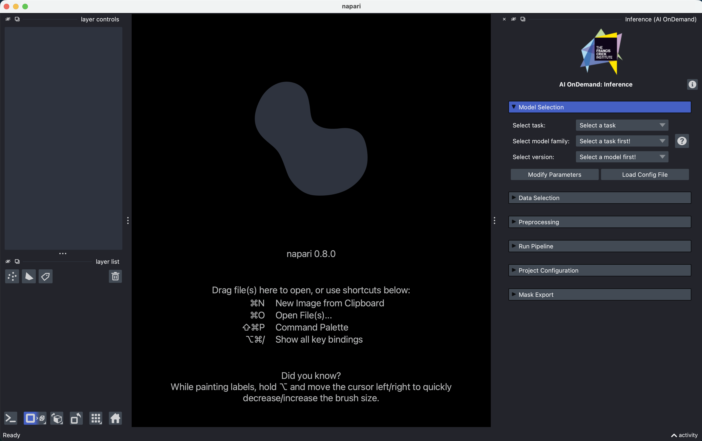
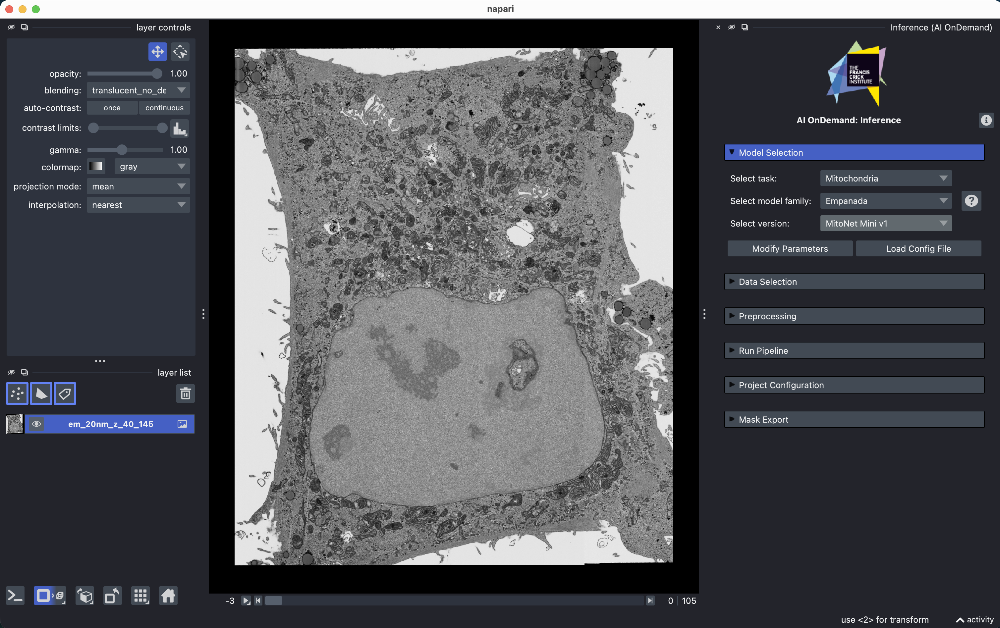
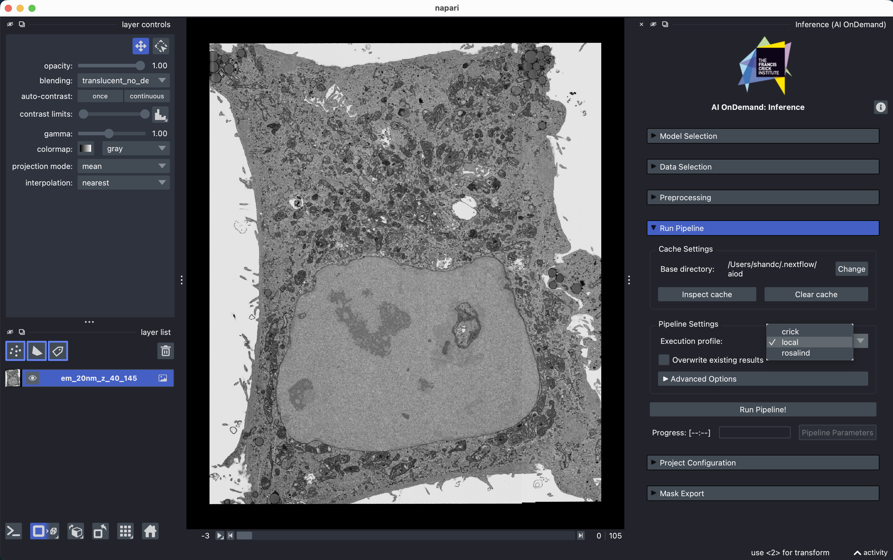
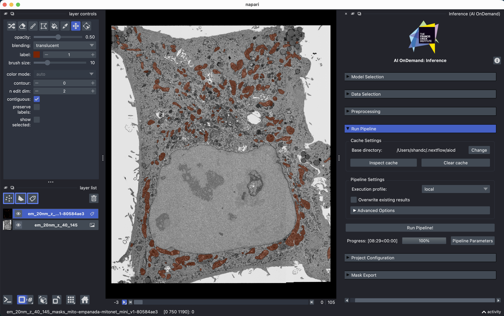

Your First Segmentation¶
This tutorial takes you from nothing installed to a set of segmentation masks you can open in other software. It uses a small example image that AIoD downloads for you, so you don't need to bring your own data yet!
You will:
- Install Napari and the AIoD plugin
- Load our built-in example electron microscopy image
- Segment its mitochondria with a pre-trained model
- Save the results!
You need:
- A computer with an internet connection
- About 15 minutes (first run takes longer; a GPU makes this faster but is not required)
In a hurry?
If you are comfortable with a terminal and Napari, this is the whole tutorial:
uv venv aiod-env && source aiod-env/bin/activate && uv pip install "napari[all]" aiod_napari- Install Nextflow and Conda
napariPlugins AI OnDemand Inference- File Open Sample AI OnDemand Example FIB SEM data
- Task Mitochondria model Empanada version MitoNet Mini v1
- Set a cache directory with a few GB free, profile
local, then Run Pipeline! - Export masks Output format: TIFF Export all masks
1. Install AIoD¶
At the Crick?
Skip this step entirely! Open the AI on Demand (AIoD) app on NEMO OnDemand and everything is installed for you. Continue from step 2, using the crick profile instead of local in step 5.
You need four things: Python, Napari, our plugin, and the tools that actually run the models (Nextflow and Conda).
Windows Users
Nextflow does not run on Windows directly. Before you start, install the Windows Subsystem for Linux (WSL) and do everything below inside WSL.
First, install Nextflow and Conda by following their own instructions. AIoD uses these behind the scenes to fetch and run each model, so you never have to install the models themselves.
We use uv to manage Python environments — install it first if you don't have it, then create a fresh environment and install Napari together with our plugin:
Prefer conda, venv, or pixi?
Any environment manager is fine — see the full installation options, including installing the plugin from within Napari itself. The only requirement is that nextflow is available on the command line in the same environment where Napari runs, because the plugin calls it directly.
Check it worked: run nextflow -version and then napari. You should get a version number from the first command, and an empty Napari window from the second.
2. Open the Inference widget¶
With Napari open, go to Plugins AI OnDemand Inference:
{kind=link}
The other widgets
The same menu also offers Postprocess and Segmentation Evaluation. Those operate on masks you already have, so they are not part of a first run. Come back to them later.
A panel appears on the right-hand side, made up of collapsible sections, with the first open. In general, we work through each section top to bottom. In this tutorial we won't cover all of them!
Check it worked: you can should see this:

{kind=link}
3. Load the example image¶
Rather than hunting for a suitable image, use the one we ship: go to File Open Sample AI OnDemand Example FIB SEM data.
{kind=link}
The first time you do this, AIoD downloads the image (a few tens of MB), so it may take a moment. It is a 3D FIB-SEM volume of cells. As this is a stack of 2D slices, a slider appears along the bottom of the canvas. Drag it to scroll through the volume and get a feel for the data.
Check it worked: you should see a greyscale image in the canvas, a layer named em_20nm_z_40_145 in the layer list on the left, and a slider under the canvas.
Using your own data instead
You can drag and drop files into Napari as usual, or use the buttons in the plugin's Data Selection section to load a single file or an entire directory at once. The plugin shows a count of the loaded files grouped by extension, so you can confirm what will be sent off for segmentation. More detail in the Data Selection reference.
4. Choose what to segment, and with what¶
First, pick the task. The task is simply what you want to find in the image, and choosing it filters the model list down to models that can actually do that!
For this tutorial, select Mitochondria.
Second, pick the model. In the model section, choose Empanada as the model, and MitoNet Mini v1 as the version:
Empanada is a family of related models; MitoNet Mini v1 is one specific model within it. We are using the "Mini" version because it is the smallest and therefore the quickest to download and run! In general, smaller models will be faster to run but may not perform as well.
Use default parameters
You will see a Modify Parameters button. Ignore it for now. Model quality can depends heavily on these settings, but the defaults are sensible and changing things before you have seen a baseline result makes it very hard to tell what helped.
When you do come back to them, every parameter has a tooltip explaining it, and the button on the right of model selection links to that model's own documentation.
You will also notice a Preprocessing section. This too can play an important role in getting the most out of models (later), but it's not needed here.
Check it worked: the task shows Mitochondria, the model shows Empanada, and the version shows MitoNet Mini v1:

{kind=link}
5. Configuring your cache and the pipeline¶
Our Run Pipeline box is where everything actually happens, but requires two important things to be set: the cache location and the Nextflow execution profile.
Cache directory. This is where AIoD stores downloaded models, configurations, and all your results. Point it somewhere with a few GB free for now. On a laptop, the default is fine. On a shared or managed machine, avoid your home directory if it has a small quota. Your choice is remembered between sessions, so you only need to set this once at the start (and when changing it!).
Execution profile. This tells AIoD where to run the computation. Choose local to run on this machine. (At the Crick on NEMO, choose crick instead.)
Why does the cache location matter more than it sounds?
The cache is deliberately semi-permanent rather than scratch space: keeping results around is what lets AIoD skip work it has already done, and lets you reload previous runs instantly. If you are part of a lab or group, putting the cache somewhere everyone can write to means you all share downloaded models and each other's results, which can avoid wasted compute.
The trade-offs (including privacy considerations for unpublished data) are covered in Caching.
Here's mine, running locally on a Mac, for reference:

{kind=link}
6. Run it¶
Click Run Pipeline!
The first run may be slow. This is normal!
Before it can segment anything, AIoD has to build a Conda environment for Empanada and download the model weights. Depending on your machine, this may take a few minutes!
Every subsequent run using this model skips both steps and starts almost immediately.
Once the segmentation itself starts, the progress bar advances as each chunk of the image is finished, which also gives you a rough estimate of the remaining time. Under the hood AIoD has split the volume into pieces and is working through them in parallel to make best use of your hardware (see Segmenting at Scale if you're curious).
Intermediate results
As each of the chunks is finished, that partial result will be filled on Napari. Note that the slider will automatically move to the start of that chunk! This can be particularly useful to see intermediate results, allowing you to cancel the pipeline early if things aren't looking up-to-scratch.
Check it worked: when the run finishes, a "Pipeline " pop-up box will show in the bottom-right of the viewer, and we'll have our masks as shown below.

{kind=link}
7. Look at your results¶
When we clicked Run Pipeline!, a Labels layer was created. We've only provided one dataset, but in the future one layer is created per dataset (i.e. per Image layer).
By default, we have a semantic segmentation, not an instance segmentation. If you want each object to have it's own ID/colour, there's two ways we can achieve this:
- Before a run, set the output type. Run Pipeline Advanced Options Set Output mask type to instance
- After a run, open the separate
Postprocessingwidget Morph Label masks
A few things worth doing to better inspect the results:
- Click the layer's icon to toggle the masks on and off. Flicking back and forth against the raw image is by far the quickest way to judge whether a result is any good.
- Drag the opacity slider in the layer controls to see the image through the masks.
- Scroll through the Z slider again. The masks should follow the structures through the volume.
If you are unfamiliar with Napari, this clip illustrates those actions:
The result may not be perfect! No model is right everywhere, and improving it is what parameters, preprocessing, and other models (potentially in combination) are for. This tutorial is to get a feel of the workflow, see the last section for how to take this forward on your own data.
8. Save your masks¶
Open the bottom Mask Export section, choose a format, and export.
{kind=link}
Use .tiff if you want to open the masks in Fiji, QuPath, or anything else. The default .rle option produces much smaller files, but they can only be read back using our aiod_utils library.
With no layer selected, everything is exported; select a single Labels layer to export just that one.
Export anything you want to keep
Your results currently live only in the AIoD cache that you set in step 5, which is meant to be cleared periodically. Once you are happy with a result, export it somewhere permanent.
You're done! You have installed AIoD, run a pre-trained deep learning model on a 3D image without installing the model yourself, and saved the output.
Something went wrong?¶
The plugin isn't in the Plugins menu
Napari is probably not running in the environment where you installed the plugin. Activate the environment (source aiod-env/bin/activate), then launch Napari from that same terminal with napari.
The run fails immediately, mentioning nextflow
The plugin runs nextflow as a command, so it must be on your PATH in the environment Napari was started from. Check with nextflow -version in the terminal you launched Napari from. If that fails, revisit step 1.
It fails while setting up the environment for the model
This is conda creating the model's environment, and it needs both network access and disk space. Check that you have several GB free wherever your cache directory points, and that you can reach the internet. Then try the run again — AIoD will pick up where it left off rather than starting over.
If that fails again, then conda may have created a partial environment. You will need to delete the offending environment(s), which can be found in the cache location we set in step 5, e.g. /Users/<USERNAME>/.nextflow/aiod/conda.
The model I want isn't in the list
Two likely reasons. First, the model list is filtered by the selected task, so check the task is right for that model.
Second, some models are shared by file path rather than public download, and are only visible to people with access to that location — see Model Location. For public pre-trained models like Empanada, Cellpose, StarDist etc., they will always be available.
If none of these solve your problem, get in touch or raise an issue — including what you selected and any error message.
Where next¶
Now that you have a baseline result, the interesting parts open up:
- Improve the result: adjust model parameters, or try a different model on the same task. The Inference reference covers every control in the widget.
- Preprocess your images: contrast adjustment and rescaling often matter more than the choice of model. See Preprocessing.
- Clean up masks: filter objects by size, merge 2D masks into 3D, or compare two results visually with the Postprocess widget.
- Measure agreement: compare masks against a ground truth or against each other with the Evaluation widget.
- Scale up: skip the GUI and run the pipeline straight from the terminal, on your own machine or your institution's HPC, with Your First Headless Run.
- Work reproducibly: save every setting in the panel to a project config to reload or share later.